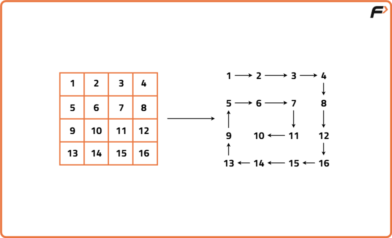
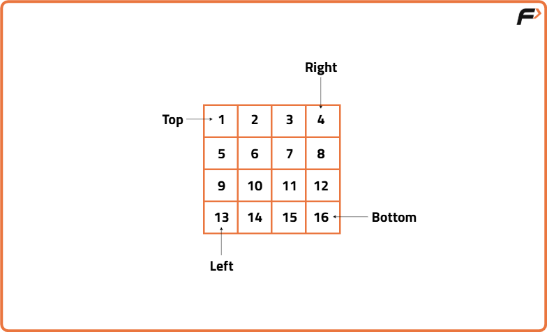

Spiral Traversal of Matrix
Problem Statement: Given a Matrix, print the given matrix in spiral order.
Examples
Input: Matrix[][] = { { 1, 2, 3, 4 },{ 5, 6, 7, 8 },{ 9, 10, 11, 12 },{ 13, 14, 15, 16 } } Outhput: 1, 2, 3, 4, 8, 12, 16, 15, 14, 13, 9, 5, 6, 7, 11, 10. Explanation: The output of matrix in spiral form.
Input: Matrix[][] = { { 1, 2, 3 }, { 4, 5, 6 },{ 7, 8, 9 } } Output: 1, 2, 3, 6, 9, 8, 7, 4, 5. Explanation: The output of matrix in spiral form.
Disclaimer: Don't jump directly to the solution, try it out yourself first.
Approach
Algorithm
- Initialize a 2D boolean matrix `visited` of same size as input to keep track of visited cells.
- Define direction arrays for right, down, left, and up movements.
- Start at (0, 0), and begin with direction = 0 (right).
- For each of the total elements in the matrix:
- Add the current cell to result and mark it as visited.
- Check if the next cell in the current direction is valid and not visited.
- If valid, move to it; else rotate the direction and try the new direction.
- Repeat this for total number of cells in the matrix.


Code
#include <bits/stdc++.h>
using namespace std;
class Solution {
public:
// Function to return matrix in spiral order
vector<int> spiralOrder(vector<vector<int>>& matrix) {
// Vector to store final spiral order result
vector<int> result;
// Get number of rows and columns
int top = 0;
int bottom = matrix.size() - 1;
int left = 0;
int right = matrix[0].size() - 1;
// Traverse the matrix in spiral order
while(top <= bottom && left <= right) {
// Traverse from left to right across the top row
for(int i = left; i <= right; i++) {
result.push_back(matrix[top][i]);
}
top++; // Move top boundary down
// Traverse from top to bottom on the right column
for(int i = top; i <= bottom; i++) {
result.push_back(matrix[i][right]);
}
right--; // Move right boundary left
// Check if there are rows remaining
if(top <= bottom) {
// Traverse from right to left on the bottom row
for(int i = right; i >= left; i--) {
result.push_back(matrix[bottom][i]);
}
bottom--; // Move bottom boundary up
}
// Check if there are columns remaining
if(left <= right) {
// Traverse from bottom to top on the left column
for(int i = bottom; i >= top; i--) {
result.push_back(matrix[i][left]);
}
left++; // Move left boundary right
}
}
// Return the final spiral order
return result;
}
};
// Driver code
int main() {
Solution obj;
vector<vector<int>> matrix = {
{ 1, 2, 3, 4 },
{ 5, 6, 7, 8 },
{ 9, 10, 11, 12 },
{ 13, 14, 15, 16 }
};
vector<int> result = obj.spiralOrder(matrix);
for(int val : result) {
cout << val << " ";
}
return 0;
}
Complexity Analysis
Time Complexity: O(m × n),Because we visit each element of the matrix exactly once, where `m` is the number of rows and `n` is the number of columns.
Space Complexity: O(1)We use only a few integer variables to keep track of boundaries (top, bottom, left, right). The `result` vector is part of the output, so it's not counted as extra space.